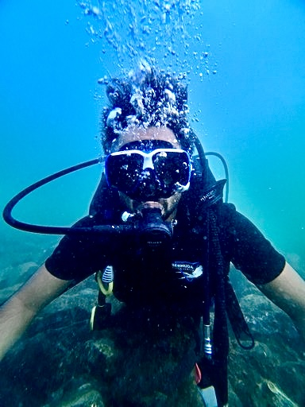

I hold an MS in Data Science (2024) from the University of Birmingham and passionate about leveraging artificial intelligence, machine learning, and data science to address challenges in healthcare and medical imaging. My research interests include developing innovative frameworks for predictive analysis and enhancing diagnostic accuracy through AI-driven solutions in biomedical applications.
I graduated with honors from the Lahore School of Economics with a degree in Economics and Marketing (2022).
Education
University of Birmingham, Department of Computer Science | September 2023-November 2024
MS in Data Science
Lahore School of Economics, LSE | August 2018-May 2022
BSc. in Economics and Marketing
Selected Projects
Ammar Ali,
Deep learning-based denoising techniques for medical imaging, leveraging frameworks like UNAD, CAPAD, and U-NET to enhance diagnostic accuracy and patient safety across ultrasound, PET, and CT modalities. March 22, 2024.
Built a Conversational AI chatbot with Rasa, integrating GPT-4 and RAG for complex queries, using DIETClassifier and CRFs for intent recognition and entity extraction, enabling accurate and scalable real-time ticket aggregation. September, 2024.
Developed a potato disease classification system using FastAPI and ReactJS with a deep learning model built in TensorFlow, achieving 96% model accuracy and 99% image classification accuracy. August 2024.
Venkatachalam A, Borase S, Sathyanarayanan S, Kekepuram M: Analyzed the impact of turnovers, personal fouls, and player positions on minutes played in NBA games using machine learning models, achieving up to 80% predictive accuracy. The project utilized XGBoost, Random Forest, and Support Vector Regressors, offering actionable insights for player utilization and game strategy in modern basketball. April 2024.[
Critically reviewed the paper 'Coarse-to-fine blind image deblurring based on K-means clustering,' which introduces a novel multiscale MAP framework using K-means clustering for efficient blur kernel estimation. The method demonstrated improved computational efficiency and image quality compared to traditional and deep learning-based approaches, highlighting its applicability in resource-constrained scenarios. February 2024.
Investigated the impact of population growth on GDP per capita, analyzing panel data from 50 countries over 20 years. Applied fixed and random effects models to assess economic and demographic interactions, including fertility rates and FDI, showcasing expertise in econometrics and causal inference. The study provided insights into the relationship between demographic trends and economic growth in developed and developing nations (Bachelor's Thesis). May 2022.
Implemented a machine learning project using Python frameworks like scikit-learn, TensorFlow, and OpenCV to classify FashionMNIST dataset images. Evaluated classification models, including SVM and MLP, achieving 87% accuracy and improved F1-scores with Sobel edge-detected images, highlighting the impact of feature extraction techniques on performance. December 2023.
Conducted an in-depth analysis of COVID-19 data in India using Python and Tableau. Explored trends in active cases, recovery, and mortality rates across states, visualized vaccination distribution, and identified key insights on the pandemic's regional impact. Leveraged libraries such as pandas, matplotlib, seaborn, and Plotly for data cleaning, analysis, and visualization. [Tech Talk Presentation]
Graduate Researcher, Center for Research in Economics and Business CREB | May 2022-March 2023
Department of Economics and Statistics, Lahore School of Economics LSE, Lahore, Pakistan
Collaborated on a research project analyzing the role of innovation in driving firm growth and enhancing labor productivity, contributing to actionable insights for policy and business strategy.l
Conducted comprehensive primary data collection from 30 small and medium enterprises (SMEs), ensuring the integrity and reliability of research data through meticulous cleaning processes.
Applied advanced statistical techniques using STATA to perform robust data analysis, delivering accurate and meaningful findings to support evidence-based decision-making.
Undergraduate Researcher | Summers 2020 & 2021
Department of Economics and Statistics, Lahore School of Economics LSE, Lahore, Pakistan
Conducted extensive field visits across diverse regions of Pakistan to support data collection efforts for a research project
Performed meticulous data cleaning using excel to enhance accuracy and reliability, preparing datasets for statistical analysis and meaningful interpretation.
Data Science Intern | March 2023-August 2023
Perrennials Digitals, Lahore, Pakistan
Collaborated with the data science team to analyze large customer datasets using Python and SQL
Implemented classification models including XGBoost and Random Forest algorithms to predict retention status of the broadband service
Extracted critical evaluation metrics such as recall and accuracy to assess model performance
Effectively presented conclusions and insights to non-technical stakeholders
Data Analyst Intern | February 2024-April 2024
Transworld Business Advisors, Dubai, UAE
Analyzed complex financial datasets using advanced Excel tools, including pivot tables, to derive actionable insights for investment evaluations.
Designed financial models for mergers and acquisitions, demonstrating proficiency in structured data analysis and decision-making processes.
Adventure| Summers 2024
I learned scuba diving from Bermuda Diving Center, Dubai, UAE

Teaching Experience
Mathematics: Linear Algebra
[Graduate]
Visiting Teaching Associate | Fall 2022
Department of Mathematics and Statistics, Lahore School of Economics LSE, Lahore, Pakistan
Stats: Probability and Statistics
[Graduate]
Visiting Teaching Associate | Fall 2022
Department of Mathematics and Statistics, Lahore School of Economics LSE, Lahore, Pakistan
Research Methods: Analysis for Large Scale Datasets
[Graduate]
Visiting Teaching Associate | Fall 2022
Department of Economics and Policy, Lahore School of Economics LSE, Lahore, Pakistan
Financial Management
[Graduate]
Visiting Teaching Associate | Fall 2022
Department of Management Sciences, Lahore School of Economics LSE, Lahore, Pakistan
Econometrics: Big Data and Their Real World Applications
[Undergraduate]
Teaching Assistant | Winter 2021
Department of Economics and Policy, Lahore School of Economics LSE, Lahore, Pakistan
Statistics
[Undergraduate]
Teaching Assistant | Spring 2020
Department of Statistics and Mathematics, Lahore School of Economics, Lahore, Pakistan
Computing for Business and Economics
[Undergraduate]
Teaching Assistant | Fall 2019
Department of Computer Science, Lahore School of Economics, Lahore, Pakistan